Le timer 555
Introduction
Le timer 555 est un circuit intégré très populaire grâce à sa simplicité et sa polyvalence.
Il peut fonctionner dans différents modes, notamment comme astable pour générer des signaux carrés, ou monostable pour réaliser un temporisateur.
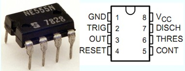 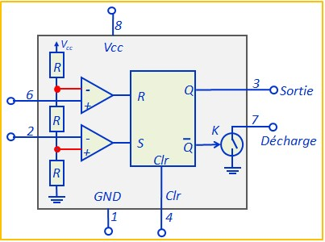Il est constitué de :
- Deux comparateurs avec les seuils 1/3Vcc et 2/3Vcc
- Une bascule RS
- Un interrupteur commandé
- La broche 4 (Clr ou Reset) est la broche de remise à zéro. Elle est active au niveau bas:
• Clr = 0 ⇒ Sortie forcée à 0 et interrupteur K fermé
• Clr = 1 ⇒ Le 555 fonctionne normalement
Le tableau ci dessous résume fonctionnement du 555:
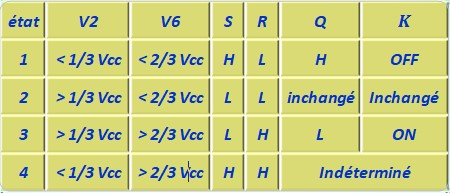Astable
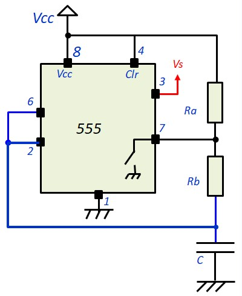C'est un oscillateur à relaxation qui génère un signal carré
- Condition initiale : C déchargée. V6=0, V2=0, on est dans l'état 1 (tableau), Vs = Vcc, l'interrupteur K est ouvert (OFF). La capacité se charge vers Vcc à travers Ra+Rb
- A l'instant t1, on passe dans l'état 2, la situation reste inchangée, la capacité continue de se charger
- A l'instant t2, on passe dans l'état 3, l'interrupteur se ferme (ON), C se décharge vers 0 à travers Rb
- A l'instant t3, on passe de nouveau dans l'état 1, l'interrupteur s'ouvre (OFF), la capacité se charge à travers Ra+Rb et le cycle recommence
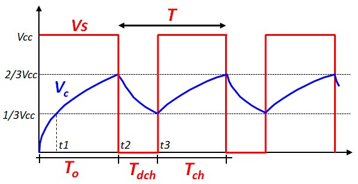
\(T_0 \; = \; (R_A \; + \; R_B) \; C \; Ln(3) \)
\(T_{dch}\;=\;R_B\;C\;Ln(2) \)
\(T_{ch} \; = \; (R_A \; + \; R_B) \; C \; Ln(2) \)
\(T \; = \; (R_A \; + \; 2R_B) \; C \; Ln(2) \)
Exemple Astable
Un petit exemple qui montre comment utiliser deux 555 pour générer des trains d'impulsion
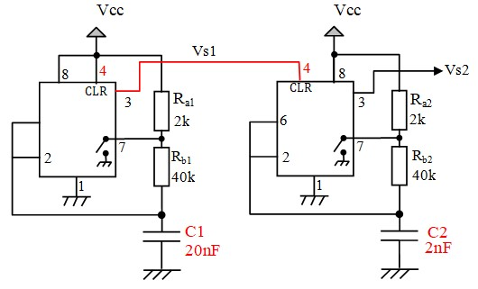 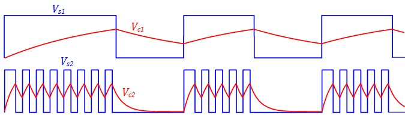Le deuxième astable a une condensateur 10 fois plus faible, il est donc 10 fois plus rapide. Mais il ne fonctionne pas tout le temp. Il reçoit la sortie du premier astable sur son entrée CLR, il n'est validé que quand cette dernière est au niveau haut.
Cet exemple montre bien que la première impulsion est toujours plus large que les autres du fait que la capacité commence à ce charger à partir de 0
Monostable
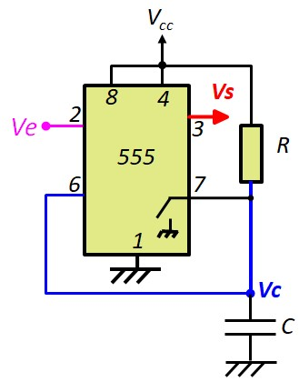C'est un temporisateur. On le déclenche, il délivre une impulsion de largeur T et il revient à son état de repos.
Au repos, l'entrée de déclenchement doit être au niveau haut. Pour déclencher, il la faut la faire descendre en dessous de 1/3Vcc. La largeur de l'impulsion de déclenchement doit être supérieure à 1µs
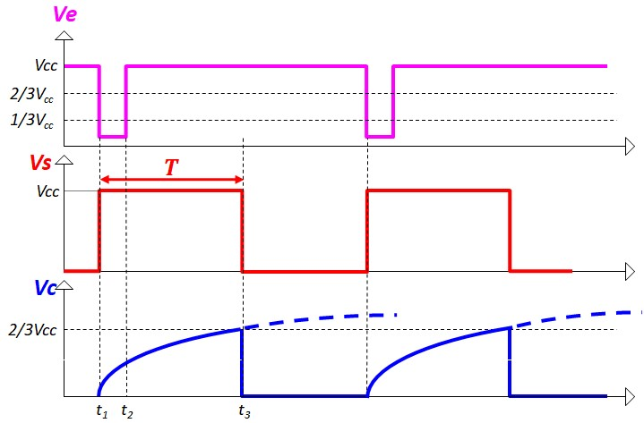- Au repos, V2=Vcc, V6=0 (condensateur vide), état 2, l'interrupteur K est fermé (ON), Vs=0. Nous allons vérifier qu'après chaque déclenchement, le 555 revient à cet état
- A l'instant t1 (déclenchement), Ve=V2 passe à une valeur inférieure à 1/3 Vcc, on passe dans l'état 1, l'interrupteur K s'ouvre (OFF), la capacité commence à se charger vers Vcc à travers R
- A l'instant t2, V2 repasse à Vcc, on est dans l'état 2, la situation reste inchangée, K reste bloqué et la capacité continue de se charger. Il est impératif que la largeur de l'impulsion de déclenchement soit inférieure à la constante de temps RC, sinon le montage ne fonctionnera pas.
- à l'instant t3, Vc devient supérieure à 2/3Vcc, on se trouve dans l'état 3, l'interrupteur conduit est la capacité se décharge instantanément, la tension à ses bornes passe aussitôt en dessous de 2/3Vcc et on se retrouve à l'état 2 ( état initial) : V2=Vcc, Vs = 0, Vc=0, K conducteur
La détermination de T ne pose pas de problème. On écrit l'équation de la charge et on l'égalise avec 2/3Vcc à l'instant T (t3)
\(T \; = \; RC \; Ln(3) \)
Exemple Monostable
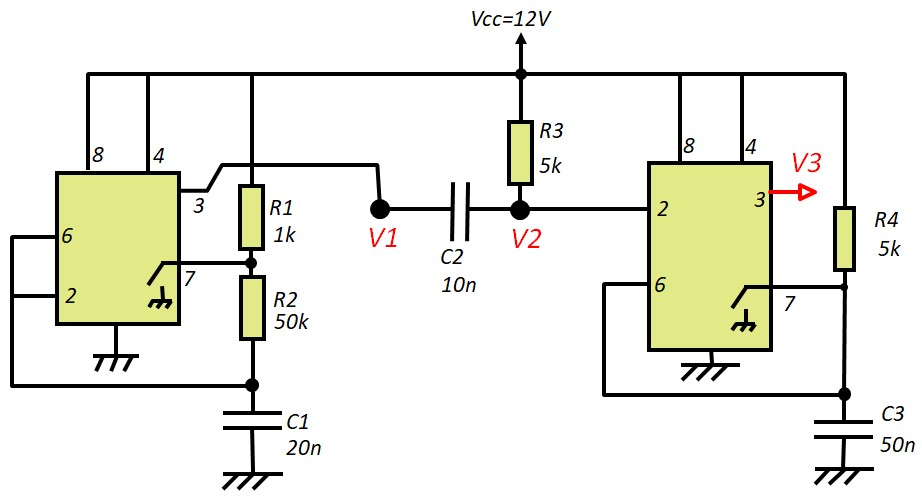Dans ce exemple, on un Astable qui génère un signal carré. Ce signal carré est appliqué à une cellule CR pour générer des impulsions étroites qui sont appliquées à l'entrée de déclenchement du monostables. Les impulsions qui descendent en dessous de 1/3Vcc permettent de déclencher le monostable. Au niveau de 1/3Vcc, les impulsion doivent avoir une largeur d'au moins 1µs
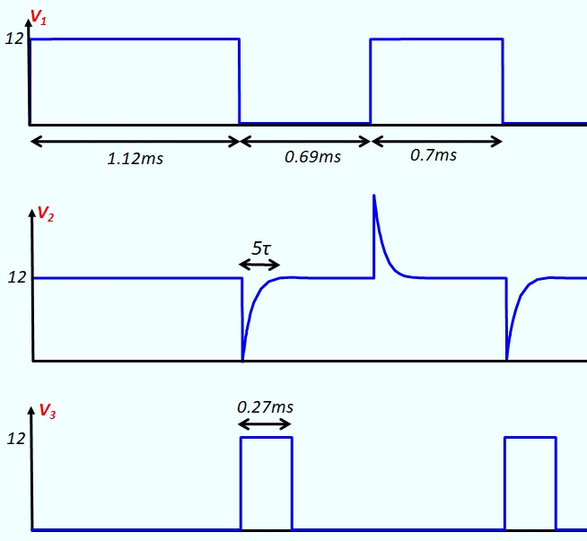